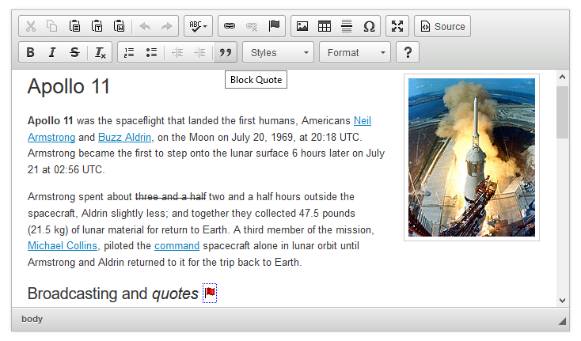

Historicizing Project:
HTML <Blockquote>By Haiyen Le
Introduction
"A critical element to understanding any literacy
technology is to understand how even the newest digital media
is intertwined with older media and the cussedness of human
(in)decision (See Fig. 2). In this writing project, I am
asking you to historicize a soft Web technology and the
complexity of human decision-making driving its development."
The <blockquote> in HTML is an interesting element,
based off of and meant to emulate in style and role of a
particular element in printed text. While it was semantically
intended or a specific purpose like its predecessor, the
manner in which it styles text and the cultural knowledge of
quotations in writing gave it a more varied usage, depending
on the user's own perceptions and needs. While the alternative
uses go against the proper semantics that were laid out for
it by developers, the adaptation of this element is in line
with the realities of the relationship people have with
technologies. By historicizing the blockquote, one can see how
the blockquote is shaped by culture and old technologies that
were before it in print.
Gibson, R., Hester, J., & Stewart, S. (2001).
Pull Quotes Shape Reader Perceptions of News Stories.
Newspaper Research Journal, 22(2), 66-78.
Haas, C. (1996). Social Dynamics, or
Scientific Truth, or Sheer Human Cussedness. In
Writing Technology: Studies on the Materiality of
Literacy. Mahwah, NJ: Lawrence Earlbaum Associates.
Petric, B. (2012). Legitimate textual
borrowing: Direct quotation in L2 student writing.
Journal of Second Language Writing, 21. 102-117
Henige, D. (2006). Discouraging Verification:
Citation Practices Across the Disciplines. Journal of
Scholarly Publishing<, 99-115.
Strizver, I. (2010). Pull Quotes (web
archives).
Studholme, O. (2011). Blockquote problems and
solutions. Oli.jp.
WHAT Working Group (2015). 4.4.4 The
blockquote element. HTML Living Standard.
World Wide Consortium (1999). 9.2.2
Quotations: The BLOCKQUOTE and Q elements. HTML 4.01
Specification.
1. HTML 4 Specification
The blockquote element was introduced in the HTML
4.01 specification by the World Wide Web
Consortium in December 1999. Under the description
within W3C’s recommendation, blockquote is one of
the elements that handles the structure of text
and is classified as a block-level element. Block-
level elements will usually display new line and
take up the space of its parent container, making
a “block”. A conspicuous example of this is
blockquote itself, which requires starting a new
line and filling up its parent container to
separate its content as a quote from other
content. This is different from the other type,
inline elements, which can only take up what is
within its tags, but can be displayed anywhere on
a line without the need to start a new one, such
as italics or emphasis.
Returning to the topic of the
recommendation by W3C, this difference between
block-level and inline-level content helps to
distinguish the blockquote and the q element, the
both of which share a similar function: the
blockquote is a block-level element for longer
quotations, while the q element is an inline
element for shorter quotes (W3C, 1993).
In plain HTML, the usage of the blockquote
element in rendered text would be indicated by
the start of a new line and the indentation of
the text. With Bootstrap, it gets a little more
decorative, as shown here:
Since the language of both quotations is American
English, user agents should render them
appropriately, for example with single quote marks
around the inner quotation and double quote marks
around the outer quotation…
HTML 5 Specification
When HTML 5 was created, the blockquote element
was included for legacy purposes [1]. Also,
according to mailing lists from when HTML 5 was
still in development in 2012 by the WHAT Working
Group, there was a discussion on setting up the
specification for proper usage of blockquote by
having it semantically require citations for the
quoted content. Or rather, the discussion in
some parts devolved into squabble on why effort
should be put into a legacy element and make it
more proper tool when often, it was noted to be
used used more for indentation than actual
quotations [2].
The exchange of emails also
involved topics of consistency, semantics, and
concerns of “proper authoring”. This was met
with some difficulties for actually making it
more proper as a writing tool, with some. It is
also noted in the mailing list that it would be
“annoying” as some put it, to make the
specification closer in line to how traditional
manuals of style dictate block quotations,
notably the Chicago Manual of Style which is
often used for most publications. The member of
the WHATWG mailing list who commented on it as
such, Oli Studholme, even wrote his own article
listing what the Chicago Manual of Style
requires for a traditional block quotation, many
of which would be impossible (2011). There
also was a lack of deeper examination into the
use cases of blockquote beyond the awareness of
inconsistencies in citation within the element
and the acknowledgement of real-life cases for
blockquote (noted as different from the use
cases they had originally discussed) [4].
In the end, they decide that the original
markup should remain intact, as CSS can handle
the presentation of it. There is no absolute
documentation of the disagreements being fully
resolved. However, they do add onto its
definition from the HTML 4 specification,
including that text within the blockquote
element should be an outside-sourced quotation
with a source for where the quoted text is taken
from. The source should be then framed with the
<cite> element (WHATWG, 2015).
Block quotations would appear to be what the
markup of blockquote is based on. The usage of
block quotations is intended for quoting from an
outside source, where the quoted text is usually
more than one hundred words or takes up at least
four lines of indented text. The purpose of the
block quotation is to present a longer quote as
significant evidence. Thus, when used in a
document, they would have rhetorical value for
the reader through the rhetorical appeals of
ethos or logos.
Due to how a block quotation can be
abused in writing to fill up space in the
writer’s stead, there are many guidelines to
how it should be properly used in a document.
With that in mind, it seemed that the blockquote
was meant more to represent a block quote in
visual presentation rather than the actual
mechanics and guidelines to it. Due to their
unwieldiness in text, especially in professional
and academic papers, block quotation in such
have become less common in them. This may be due
to belief that they are excessive compared to
shorter quotations and seen as a practice of
amateur academic writing.
In studies that
compared the direct quotation practices in low-
and high-rated theses, the latter had shorter
quotations, but were used more prolifically,
with stronger justification for their usage.
(Petric, 2012). Block quotations can be more
awkward to justify their purpose in a paper,
compared to shorter quotations. There is also
the concern of plagiarism, where writers worry
that longer quotations and the obscure block
quotation are more likely to be improperly
formatted and at a higher risk of being cited
for plagiarism (Henige, 2006).
Pull Quote
Pull quotes are a type of visual or design
element also found in print, but mainly in
journalism and magazines. They create a focal
point for the reader by pulling from its own
source text a quote, an excerpt, or a key phrase
and using that as a graphical element placed on
the page, emphasizing it through changes in
design and typography from the regular text
(Strizver, 2010).
Their purpose is for adding
point of interest or visual design to a
document, but they also have been found to have
a strong rhetorical impact on the audience. In
some cases, they can also shape the reader’s
perception on the document through the
availability heuristics that reader use
subconsciously to absorb information, according
to one study from the Newspaper Research Journal
(Gibson et al., 2001).
Like block quotations,
they are a page element that contributes the
rhetorical impact of a page. While there is no
HTML tag for pull quotes specifically, writers
and designers do continue the practice of using
pull quotes on the web. There, the role of pull
quotes is looser compared to how it’s used in
print, partly due to the more visually-oriented
nature of web design.
Varied Web Usage
Currently on the web, blockquote has been used
in ways outside of both specifications by W3C and
WHATWG. Obviously, it can still be used as it was
intended, which would include a proper citation
like the HTML 5 specification recommends.
However, in the realm of web writing, that is a
very niche purpose for a surprisingly versatile
element, as people with some knowledge of how to
use HTML and CSS have found.
One mundane usage
of the blockquote element is to function as
indentation for text. The WHATWG mailing list
noted that during development that simple text
indentation was a very common way to use
blockquote, which led to heated discussion on
semantics. This is a completely incorrect way to
use blockquote that defies the recommendations,
but due to how it does indent the text
naturally, it has been used for that purpose as
a typing shortcut when there is limited knowledge
on text structure in HTML.
Another usage of the
blockquote tag is creating pull quotes. This
practice is common on web articles for news
websites, such as this pull quote from a BBC
article, created with the blockquote element
according the page source:
Because they are quotations from within the
text instead of an outside source and would not
have the attribution without being redundant,
using the blockquote element for pull quote is
also considered incorrect usage, according to
its definition as a semantic HTML element.
Usage Contexts
The "misuse" of blockquote is often not one with
malevolent intentions, or even realized as
misuse in many cases by the user. A person would
have to know the specification of blockquote to
realize the latter, and to put it bluntly,
looking up specifications is not always
necessary when the creation of web content is
so streamlined by modern technology that broad
audience can accomplish such a task, sometimes
without ever needing to see a line of HTML code.
Due to that, one cause of this problem is
through how blockquote is presented to the
regular audience. A way to think of this issue
is as such: a person would likely require
background knowledge of HTML to use blockquote
in a semantically correct manner, however, that
knowledge isn’t required at all for a person to
use the blockquote element in the way they
find appropriate for their needs.
Blockquote is a common feature of many rich text
editors, an interface that simplifies writing
for web content with a live preview and editing
of rendered text without the writer needing to
type in code, also known as “what you see is
what you get” (WYSIWYG). Often there is little
context for what this blockquote button does,
except that the visual rhetoric of quotation
marks would imply that it’s used for some sort
of quotation, and using it on the rich text
would only give a surface-level response as to
what it does.

For those who do understand HTML and can use
its markup along with Cascading Style Sheets
(CSS), they wouldn’t need to strictly follow
semantics. The stance on proper usage can vary
from expert to expert. A technology that can be
seen a somewhat encouraging the idea that
blockquote can be used for quotes is CSS itself.
With the use of CSS, a blockquote can transforms
from indented text to a rhetorically functional
visual element, with details such as enlarged
quotation marks, a colored box for a background,
and so on. While a person can definitely make a
semantically correct blockquote while applying
CSS to make it a more reader-friendly element,
often that isn’t the case. A quotation with the
purpose of supporting an argument through logos
wouldn’t need the pathos kind of appeal that a
blockquote with CSS can provide.
The third
reason is that the blockquote element in any web
writing practice is done based off of the
traditional print practices of the block
quotation and pull quote. Both are functional
practices of writing for printed documents,
however they serve different purposes are found
in different fields of writing. What they do
have in common is that they are a quotation
added to a text, something that the blockquote
element can do for web writing.
Writing as a practice
The term "practice" within this historicizing
context refers to a conceptual framework
proposed by Sylvia Scribner and Michael Cole,
two literary reseachers whose theorized concept
of this practice put the "technology" of writing
under a whole new light. The practice of writing
goes beyond the general understanding that it's
a practical technical skill. On a deeper level,
writing has strong, dynamic connections to the
environment where it is used and the underlying
context of its usage, including culturally-
shared knowledge, other technologies, and
present sign-systems (1981).
Historicizing the blockquote provides evidence
supporting the idea of writing as a practice,
dynamic in nature and influenced by context. In
this situation, blockquote has been connected to
two different writing practices. One is the more
formal, academic style of writing, and the other
is journalistic writing. Block quotations and
pull quotes from their respective practices are
older technologies that were transferred to the
newer technology of web writing through the
blockquote element. The idea of culturally-
shared knowledge allowed both possible uses for
blockquote to thrive, regardless of semantics.
Myths of Technology
From Chapter 6 of Christina Haas' book Writing
Technology, Haas brings up two common myths of
technology, both of which which she then debunks
through her own experiences with the Andrew
Project at Carnegie Mellon university. These two
myths are that technology is self-determining and
that it is transparent (1996).
The blockquote element, a soft web technology in
itself, also proves the two myths to be falsehoods
with its history. From the mailing lists that took
place during HTML 5's development, the blockquote
created confusion and some debate over how to
give it proper specifications when its usage was
noticeably inconsistent. Had blockquote been an
"all-powerful" and self-determining technology,
these exchanges of emails wouldn't have ever
occurred, nor would this controversy on whether
it's proper to use the blockquote element for
pull quotes.
The confusion present in some of
those emails on the mailing list is also one
aspect of blockquote's nature that disproves
the notion that technology is always transparent.
For many that go on the web, they do not think of
the blockquote exactly the way that the W3C
Recommendation describes it. More likely, if they
even know what a blockquote is, they would think
of the button containing quotation marks on a text
editor that they can use on their text.
Transparency would mean that's blockquote's
purpose would have been clear and undisputable
by any user, regardless of familiarity with it.